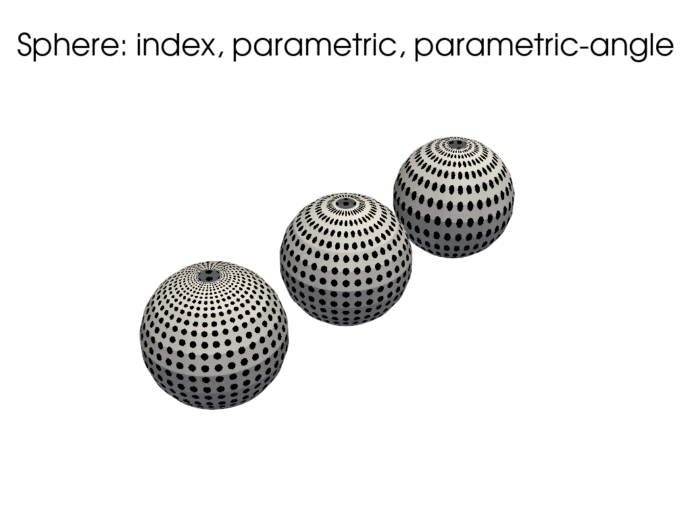
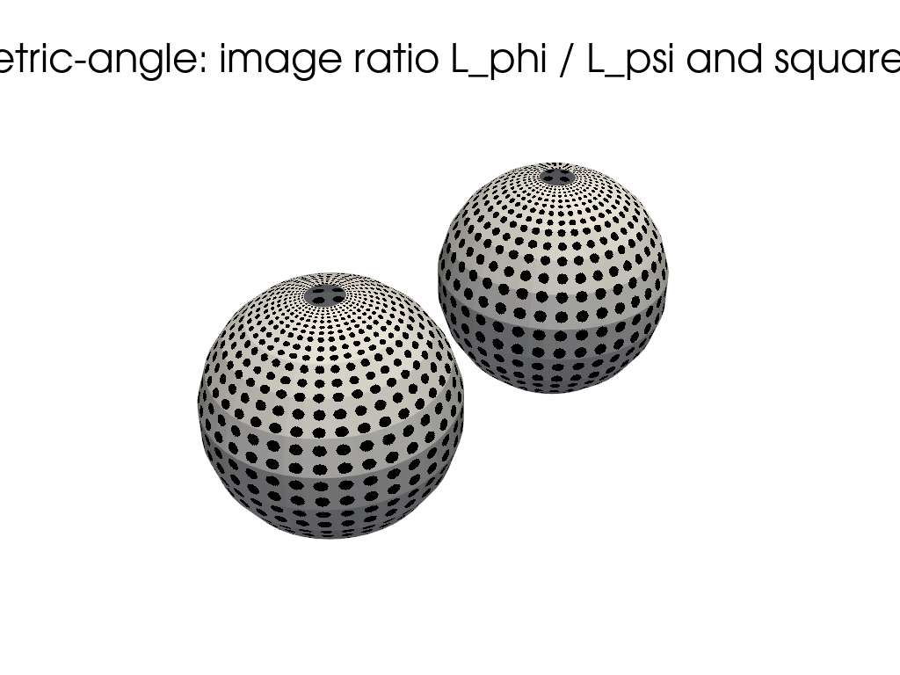
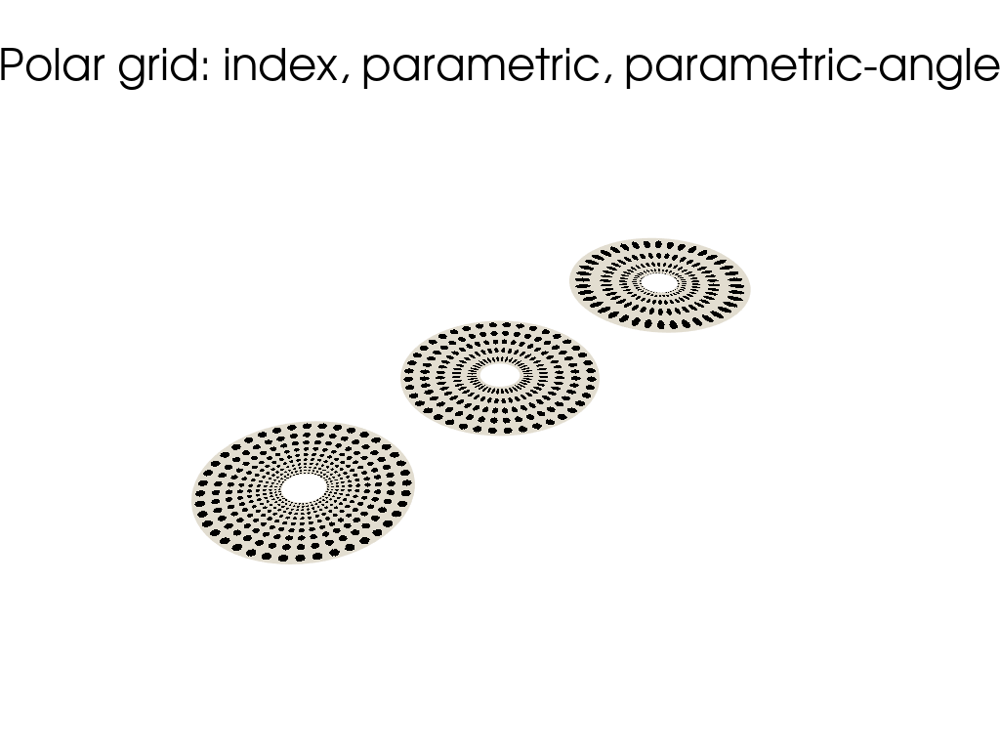

Note
Go to the end to download the full example code.
UV modes of the meshes#
The uv_mode of the mesh generators chooses how the UV coordinates are distributed
between the corners of the grid:
"index": proportional to the indices of the vertices. The texture follows the discretization of the grid."parametric"(default): proportional to the coordinates of the grid (\((\phi, \theta)\) for a sphere, \((r, \theta)\) for a polar grid). The texture no longer depends on the discretization, but it is stretched by the curvature of the coordinates."parametric-angle"(spheres and 2D polar grids only): a conformal projection that preserves the angles. The texture is only scaled, never stretched in one direction.
A periodic pattern of round dots shows the differences: a dot stays round only where the UV map preserves the angles.
See also
Creating 3D surface meshes for the 3D meshes.
Creating 2D surface meshes for the 2D meshes.
Periodic dot pattern#
The image has an integer number of dots along each axis, so the pattern is periodic: it matches across the seam of a closed mesh (UV coordinates 0 and 1).
import numpy
from pysdic import Plotter3D
def dot_pattern(n_dots_u, n_dots_v, pixels_per_dot=32):
# Gray image (height, width) of black dots on a white background, periodic along both axes
x = (numpy.arange(n_dots_u * pixels_per_dot) + 0.5) % pixels_per_dot - 0.5 * pixels_per_dot
y = (numpy.arange(n_dots_v * pixels_per_dot) + 0.5) % pixels_per_dot - 0.5 * pixels_per_dot
distance = numpy.hypot(x[None, :], y[:, None])
return numpy.where(distance < 0.3 * pixels_per_dot, 0, 255).astype(numpy.uint8)
def shift(mesh, dx):
# Displacement of all the vertices along x (to display several meshes side by side)
return numpy.tile([dx, 0.0, 0.0], (mesh.n_vertices, 1))
Sphere#
The polar angles are refined near the poles (non-uniform grid). The UV square
\([0, 1]^2\) is stretched onto the whole image, so the image must have the aspect
ratio of the projected grid, \(L_\phi / L_\theta\) for "parametric"
(equirectangular) and \(L_\phi / L_\psi\) with
\(\psi = \ln \tan(\theta / 2)\) for "parametric-angle" (Mercator).
from pysdic import create_3d_quadrangle_4_spherical
n_p, n_t = 48, 16
t0, t1 = 0.15, numpy.pi - 0.15
t_array = t0 + (t1 - t0) * 0.5 * (1.0 - numpy.cos(numpy.linspace(0.0, numpy.pi, n_t))) # Denser near the poles
p_bounds = (0.0, 2 * numpy.pi * (1 - 1 / n_p))
L_phi = 2 * numpy.pi # Closed mesh
L_theta = t1 - t0
L_psi = numpy.log(numpy.tan(t1 / 2)) - numpy.log(numpy.tan(t0 / 2))
print(f"Equirectangular ratio L_phi / L_theta = {L_phi / L_theta:.3f}")
print(f"Mercator ratio L_phi / L_psi = {L_phi / L_psi:.3f}")
n_dots = 36 # Along phi
textures = {
"index": dot_pattern(n_dots, round(n_dots * L_theta / L_phi)),
"parametric": dot_pattern(n_dots, round(n_dots * L_theta / L_phi)),
"parametric-angle": dot_pattern(n_dots, round(n_dots * L_psi / L_phi)),
}
plotter = Plotter3D()
for i, (uv_mode, texture) in enumerate(textures.items()):
sphere = create_3d_quadrangle_4_spherical(
t_array=t_array, p_bounds=p_bounds, n_p=n_p, close=True, uv_mode=uv_mode
)
plotter.add_mesh(sphere, warp_by=shift(sphere, 2.5 * i), texture=texture, show_edges=False, show_vertices=False)
plotter.set_title("Sphere: index, parametric, parametric-angle")
plotter.show()

Equirectangular ratio L_phi / L_theta = 2.211
Mercator ratio L_phi / L_psi = 1.214
"index": each ring of elements gets the same height of texture, so the dots are flattened near the poles (small rings) and elongated at the equator (large rings)."parametric": the dots no longer depend on the grid, but they are stretched along \(\phi\) by \(1 / \sin\theta\) near the poles."parametric-angle": the dots are round everywhere, and smaller near the poles (local scale \(\sin\theta\)).
The radius \(f\) is not used by the UV map: a sphere of any radius, or a deformed sphere, gets the same UV map as the unit sphere, and the texture follows the deformation.
deformed = create_3d_quadrangle_4_spherical(
lambda t, p: 1.0 + 0.15 * numpy.sin(4 * p) * numpy.sin(t),
t_array=t_array, p_bounds=p_bounds, n_p=n_p, close=True, uv_mode="parametric-angle",
)
unit = create_3d_quadrangle_4_spherical(
t_array=t_array, p_bounds=p_bounds, n_p=n_p, close=True, uv_mode="parametric-angle"
)
print(f"Same UV map as the unit sphere: {numpy.array_equal(deformed.uvmap, unit.uvmap)}")
Same UV map as the unit sphere: True
The aspect ratio of the image matters: with "parametric-angle" and an image of the
wrong ratio (here a square image), all the dots are stretched in the same way. The UV
map still preserves the angles, but the image does not.
plotter = Plotter3D()
plotter.add_mesh(unit, texture=textures["parametric-angle"], show_edges=False, show_vertices=False)
plotter.add_mesh(unit, warp_by=shift(unit, 2.5), texture=dot_pattern(n_dots, n_dots), show_edges=False, show_vertices=False)
plotter.set_title("parametric-angle: image ratio L_phi / L_psi and square image")
plotter.show()

2D polar grid#
The same modes exist for the 2D polar grids, with \(r\) as the first axis of the grid
(along \(u\) with the layout 0) and \(\theta\) as the second one. The
"parametric-angle" mode is the log-polar projection \((\ln r, \theta)\). The
radii are refined near the center. The 2D mesh is displayed in the plane \(z = 0\).
from pysdic import Mesh, create_2d_quadrangle_4_polar
def to_3d(mesh):
# The 2D mesh in the plane z = 0 (to display it with Plotter3D), with the same UV map
coordinates = numpy.column_stack((mesh.coordinates, numpy.zeros(mesh.n_vertices)))
mesh_3d = Mesh(coordinates, mesh.elements, element_type="quadrangle_4")
mesh_3d.uvmap = mesh.uvmap
return mesh_3d
n_r, n_t = 12, 64
r0, r1 = 0.2, 1.0
r_array = r0 + (r1 - r0) * numpy.linspace(0.0, 1.0, n_r) ** 2 # Denser near the center
t_bounds = (0.0, 2 * numpy.pi * (1 - 1 / n_t))
L_theta = 2 * numpy.pi # Closed mesh
L_r = r1 - r0
L_rho = numpy.log(r1 / r0)
n_dots = 40 # Along theta
textures = {
"index": dot_pattern(round(n_dots * L_r / L_theta), n_dots),
"parametric": dot_pattern(round(n_dots * L_r / L_theta), n_dots),
"parametric-angle": dot_pattern(round(n_dots * L_rho / L_theta), n_dots),
}
plotter = Plotter3D()
for i, (uv_mode, texture) in enumerate(textures.items()):
annulus = create_2d_quadrangle_4_polar(
r_array=r_array, t_bounds=t_bounds, n_t=n_t, close=True, uv_mode=uv_mode
)
annulus = to_3d(annulus)
plotter.add_mesh(annulus, warp_by=shift(annulus, 2.5 * i), texture=texture, show_edges=False, show_vertices=False)
plotter.set_title("Polar grid: index, parametric, parametric-angle")
plotter.show()

"index": each ring of elements gets the same width of texture, so the dots are flattened along \(r\) near the center (thin rings) and elongated outside."parametric": the annulus is unrolled into a rectangle, so the dots are stretched along \(\theta\) proportionally to \(r\)."parametric-angle": the dots are round everywhere, and smaller near the center (local scale \(r\)).
The log-polar projection is infinite at the center: "parametric-angle" needs strictly
positive radii, so it cannot map a full disk (r_bounds=(0, R) with stick=True).
Total running time of the script: (0 minutes 0.835 seconds)